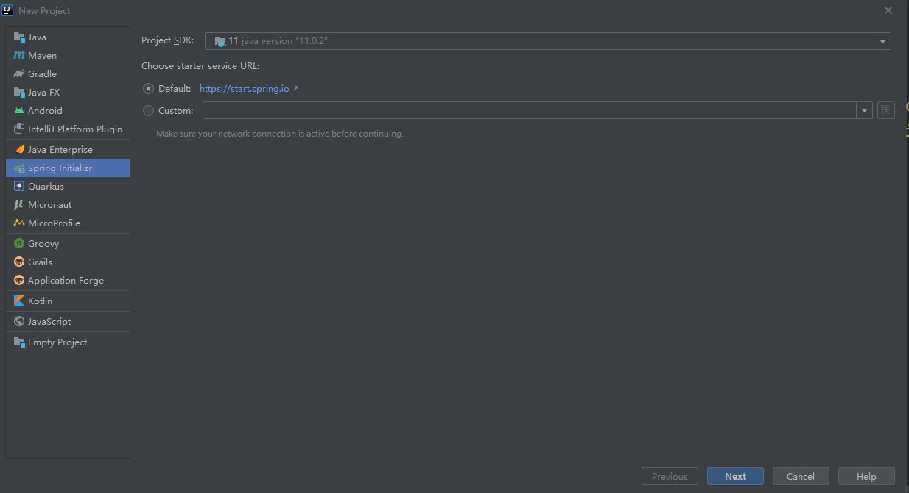
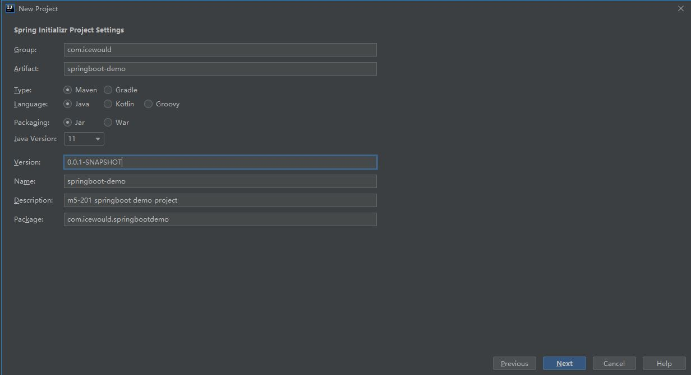
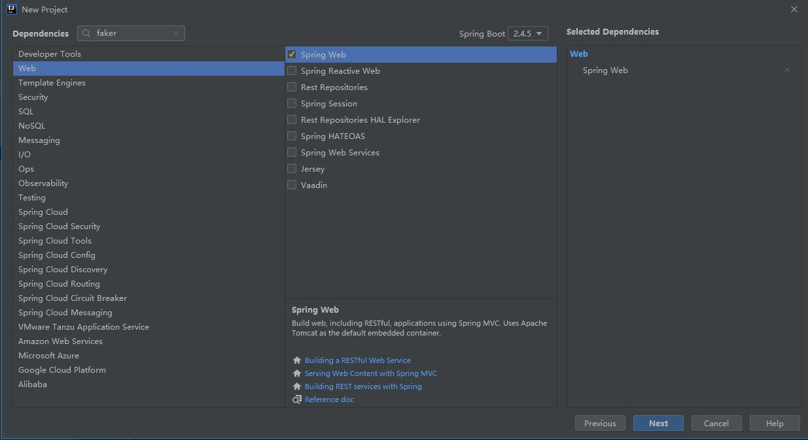
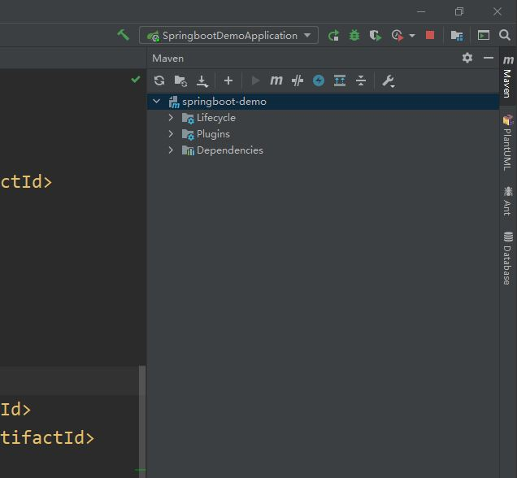

SpringBoot
在开始之前，请重新回顾一下 客户端-服务端通讯 1.2 后端 的内容。我们要开发一个应用程序的后台的话，大体的逻辑就是这样。
这段逻辑可以由不同的语言和框架去实现。Spring 就是一个用来搭建这套逻辑的框架。而 SpringBoot 在 Spring 的基础上，提供了一些预设和封装，开发起来更加快捷。
准备工作
首先，强烈推荐 IntelliJ。注意，请下载 Ultimate 版，这样才能获得 Spring 的完整支持！下载的同时，请从这里 用学校邮箱申请免费使用。
下载完成后，打开 intelliJ，点击新建项目，从左边一栏选中 Spring Initializer，指定一个 JDK 包，然后点击下一步。

在下一个页面，你可以像正常的 Java 项目那样进行配置。Type 我们统一先选 Maven（如果想尝试 Gradle 的话可以之后自己操作），Language 自然是 Java，Packaging 选 Jar 和 War 目前没区别。Group 是你的公司或是组织，通常是 com.<公司名> 或 org.<组织名>（像是倒着写的域名），Artifact 是你的项目名字，可以随便起。

下一页会让我们选要安装的 Dependency。我们需要勾选 Web 下的 Spring Web。这是用来写 HTTP 请求的接口的（后面教程里会用到）。其它的先啥也不装，点 next。之后有需要再慢慢安装。

最后，指定项目保存在哪个目录下面，我们就完成了。
进入页面后，我们需要等待右下角的下载 (download) 和索引 (indexing) 进程结束（有时候会贼慢，可能需要科学上网来提速）。
完成之后，点击一下右上角的运行试试。如果正常，终端会告诉你一个网址，用浏览器打开，可以看到一些消息。如果跑不起来，可以尝试以下：
- 刷新一下 Maven（具体做法见 刷新 Maven 板块）
- 打开 settings，输入 maven，找到它下面的 repositories，看看有没有 Error。把里面的东西都 update 一下。
- 把 IntelliJ 关了重开。
当然，也可能是其它问题。请积极寻求帮助。
开始
可以跟着教程1写一个简单的接口了！请跳过教程中的 Step 1（因为 IntelliJ 已经帮你做好了）。
进一步
完成后，请跟着教程2做一个接口出来。请跳过前面的部分，直接从 Create a Resource Representation Class 开始。
更多
在大部分场景下，服务端绕不开向数据库写入和读取数据（比如存储和读取用户的信息）。但是，我们把数据库留到下次再讲（这是大头），先用一个叫做 Faker 的包生成一些虚拟的数据。请先阅读它的文档。
刷新 Maven
注意，我们这里要安装新的第三方库。首先，要把 dependency 加到 pom.xml 文件里。然后，我们要刷新 Maven

如图所示，点击 IntelliJ 最右边（紧贴屏幕的）竖着写的 Maven，展开页面，点击工具栏的第一个按钮进行刷新。
这样，我们就可以直接在 java 文件里 import 这个包并且使用了。